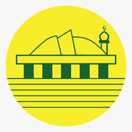
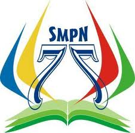
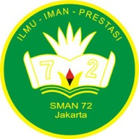

SD Islam At-Taubah(2003-2009)
 SD Islam At Taubah merupakan sebuah Sekolah Dasar Islam Swasta yang terletak di Jalan Pulo Mas Barat V, Kelurahan Kayu Putih Kecamatan, Pulo Gadung, Jakarta Timur, Indonesia. Sekolah Dasar Islam At Taubah Pulo Mas didirikan tahun 1987 oleh K.H. Ismael Hassan, S.H. dan dibawah naungan Yayasan Masjid Pulo Mas, Manajemen Pendidikan Sekolah Dasar Islam At-Taubah dikelola oleh Bidang Pendidikan At-Taubah, Sekolah Dasar Islam AtTaubah memiliki kode NPSN 20109016.
SMPN 77 Jakarta(2009-2012)
 Sekolah Menengah Pertama Negeri 77 DKI jakarta yang berada di Cempaka Putih Jakarta Pusat. Tepatnya di Jl. Cempaka Putih Tengah 18, Cempaka Putih Timur, Jakarta Pusat. Berakreditasi A dan merupakan salah satu sekolah terbaik di Jakarta Pusat yang berada dalam peringkat 10 besar, SMPN 77 memiliki kode NPSN 20100257.
SMAN 72 Jakarta(2012-2015)
Sekolah Menengah Atas Negeri 72 Jakarta adalah Sekolah Menengah Atas Negeri yang berada di bilangan Kelapa Gading, Jakarta Utara.SMA Negeri 72 Jakarta menerapkan Kurikulum Tingkat Satuan Pendidikan (KTSP) kepada setiap siswa-siswi yang bersekolah di SMA Negeri 72 Jakarta, sebagai pengganti atas Kurikulum Berbasis Kompetensi (KBK). Mempunyai jurusan berupa lmu Pengetahuan Alam (IPA) Ilmu Pengetahuan Sosial (IPS) Dan Ilmu Pengetahuan Bahasa (Bahasa).